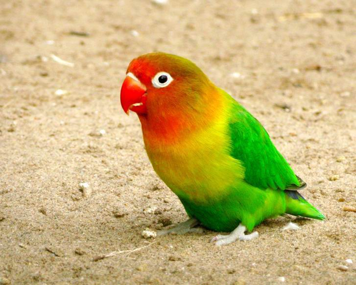
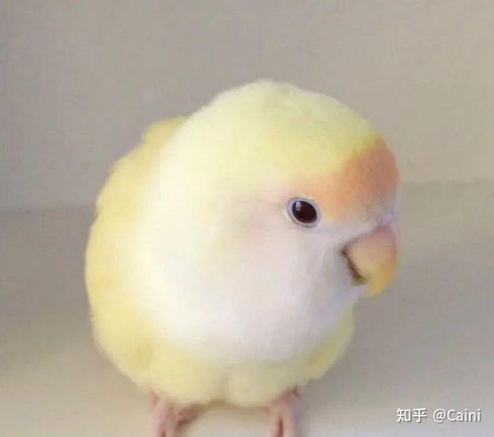
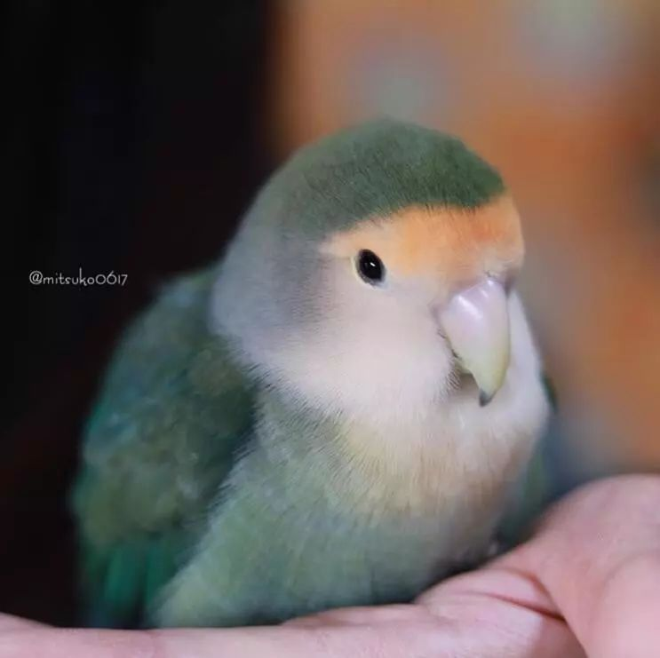
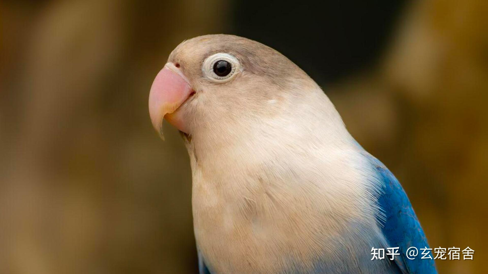
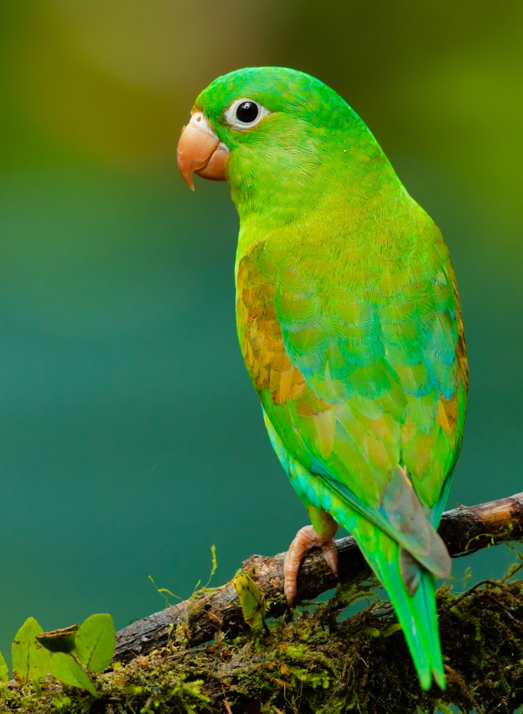
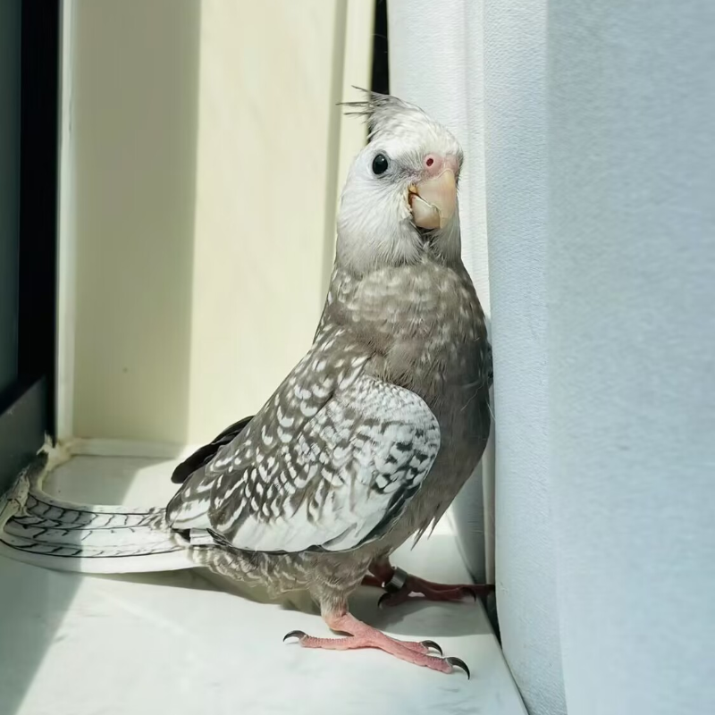

经典
费氏牡丹鹦鹉
Normal / Wild Green
翠绿的羽毛像裹了层春日嫩芽，粉脸蛋配橘红小顶，黑溜溜的眼睛亮晶晶的，手养后会追着你叽叽喳喳，是自带阳光 buff 的小天使～
最常见、最受欢迎的牡丹鹦鹉羽色变异

Normal / Wild Green
翠绿的羽毛像裹了层春日嫩芽，粉脸蛋配橘红小顶，黑溜溜的眼睛亮晶晶的，手养后会追着你叽叽喳喳，是自带阳光 buff 的小天使～

Lutino
谁能拒绝一只软 fufu 的日本桃牡丹鹦鹉呀！奶黄的羽毛像裹了一层棉花糖，白脸蛋配浅橙小顶，红溜溜的眼睛圆滚滚的，手养后会黏着你蹭来蹭去，是自带治愈 buff 的小团子～

White-faced
就像一个永远长不大的小孩，安安静静地住在你的生活里，用它毛茸茸的方式，一点点把你的心填满。

White-faced Blue
一身雾蓝羽毛像揉进了半片天空，浅灰小帽配奶白脸蛋，黑葡萄似的眼睛透着温柔，手养后会安静陪在你身边，是自带清新滤镜的软萌小天使～

Violet
养一只橙颏鹦哥，你得到的不是一个会炫耀技巧的表演者，而是一个会把生命轻轻地、完整地托付给你的小友。它用十多年的时光，不急不躁地告诉你：陪伴，才是最深情又最治愈的告白。

Opaline
背部羽色与身体融合，色彩过渡更均匀柔和。
不同基因组合产生丰富外观，了解命名不再混淆。
知道品种特征，避免被错误标注或高价误导。
羽色与基因无关健康，但了解品种有助于交流和学习。